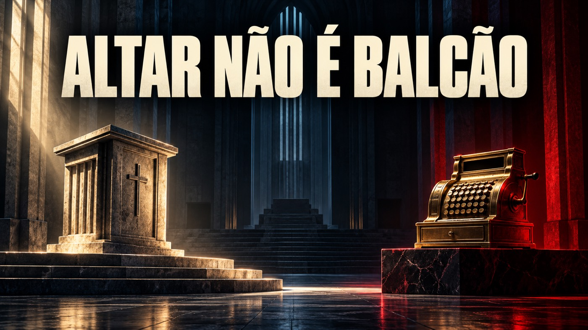
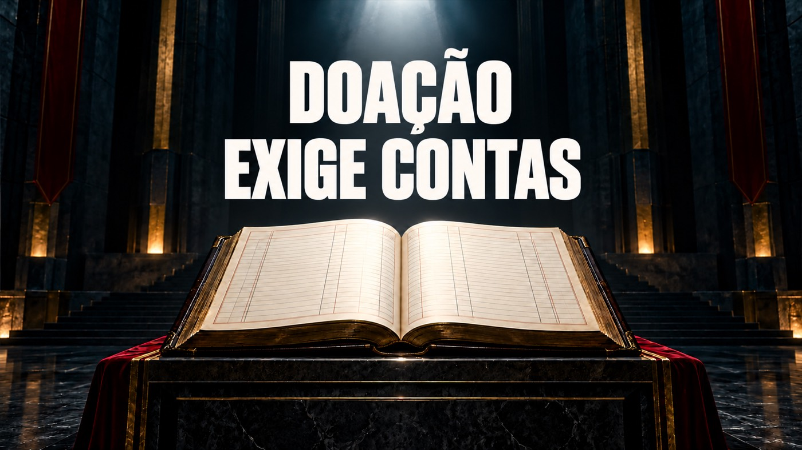
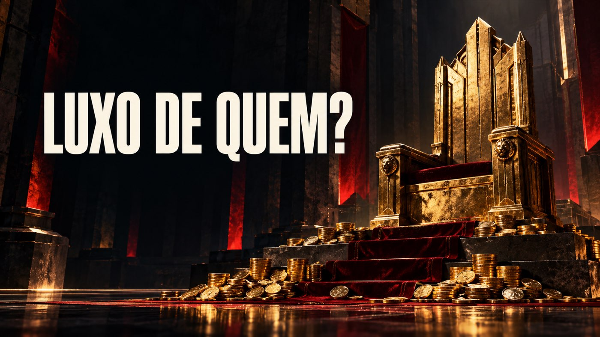
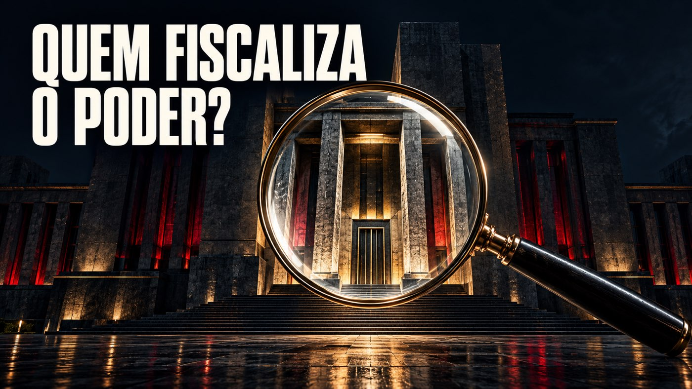
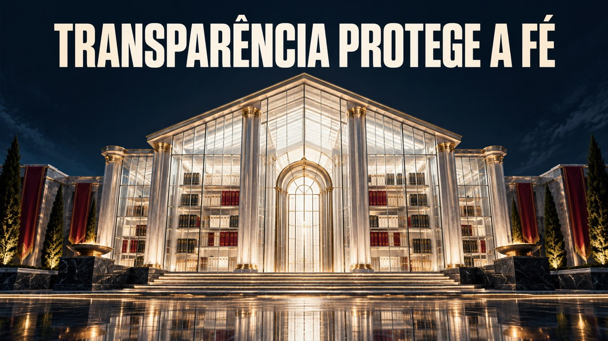

Turbo X Profânico — coleção de 10 imagens01 / 10Fé não é cheque em branco02 / 10Siga o dinheiro
03 / 10Altar não é balcão04 / 10Promessa não é prova
05 / 10Doação exige contas
06 / 10Luxo de quem?
07 / 10Quem fiscaliza o poder?08 / 10Crer também é questionar
09 / 10Transparência protege a fé10 / 10O sagrado não se vende